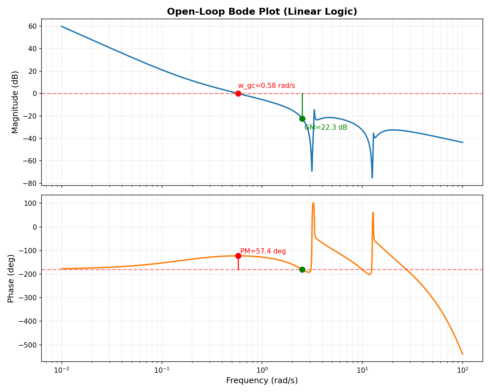
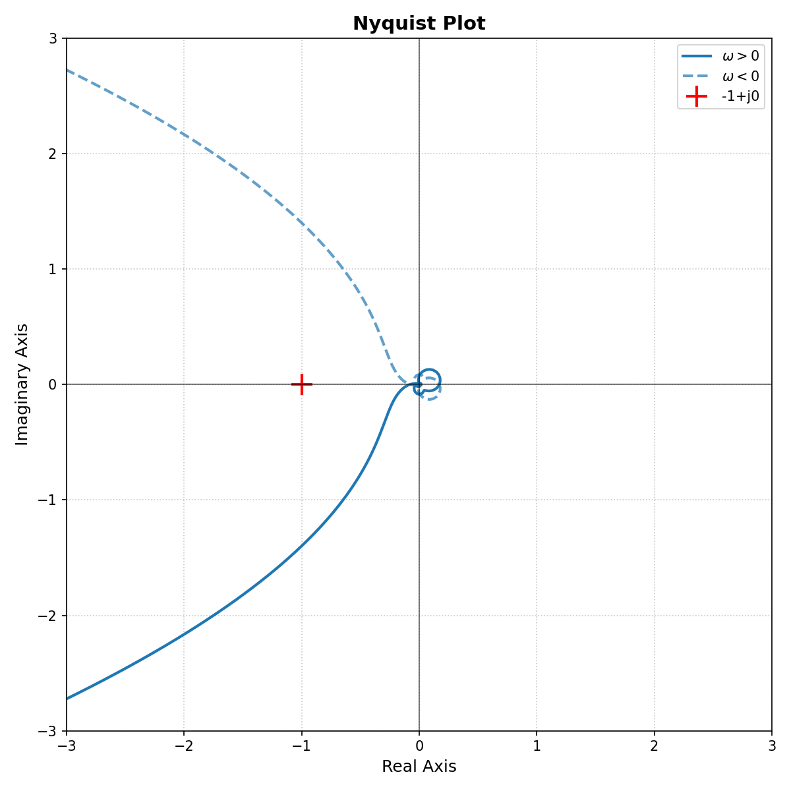
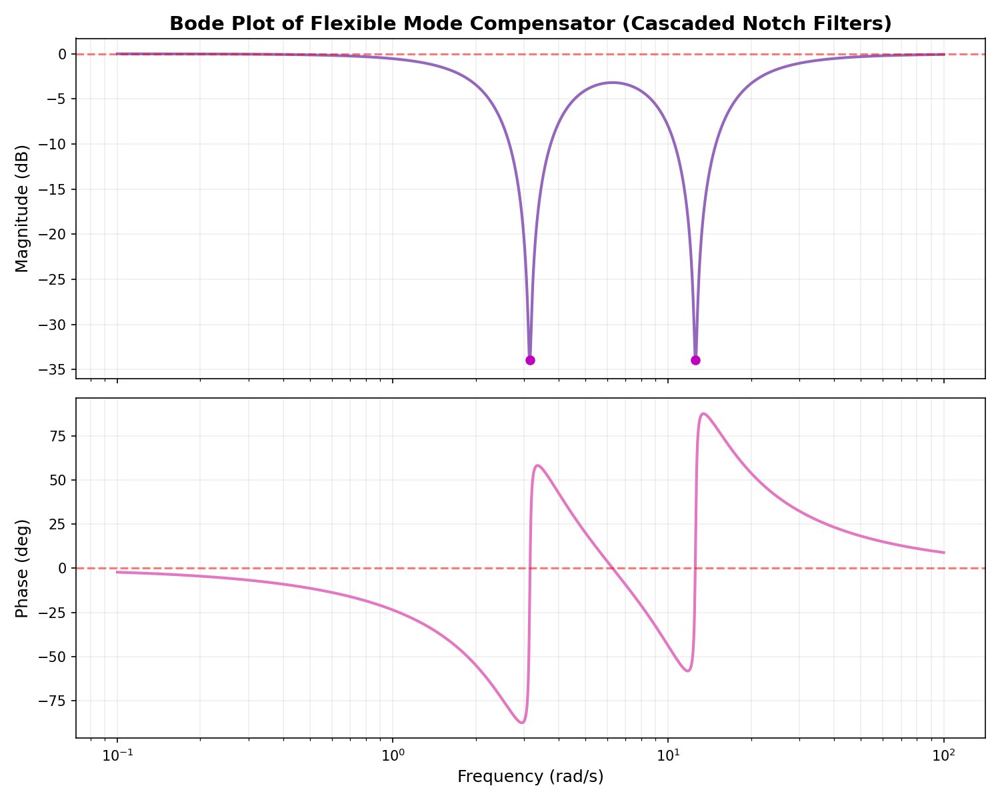

Frequency domain analysis of the linear continuous-time components of the flexible satellite control loop, including the rigid body, flexible modes (0.5 Hz & 2.0 Hz), PD controller, Notch Filters, and computational delays.
The system exhibits strong stability margins, guaranteeing robustness against modeling errors and ensuring the PWPFM will not fall into severe limit cycling caused by structural resonances.
The Bode plot below illustrates the frequency response of the open-loop transfer function L(s) = P(s)C(s)N(s)D(s). Notice the sharp "notches" at 3.14 rad/s (0.5 Hz) and 12.56 rad/s (2.0 Hz), which perfectly cancel out the resonant peaks of the flexible solar panels, preventing high-frequency gain that would otherwise cause instability.

The Nyquist contour maps the complex frequency response. According to the Nyquist stability criterion, since the open-loop system is stable, the closed-loop system is stable if and only if the contour does not encircle the critical point at -1+j0. As shown below, the contour safely avoids the critical point, visually confirming the robust phase and gain margins.

To safely stabilize the flexible appendages (e.g., solar panels) vibrating at 0.5 Hz and 2.0 Hz, we implemented a compensator consisting of two cascaded Notch Filters. The Bode plot below isolates the frequency response of just this compensator. It heavily attenuates (drops the gain by ~34 dB) exactly at the problematic resonant frequencies, preventing the PWPFM controller from feeding energy into the structural vibrations.
